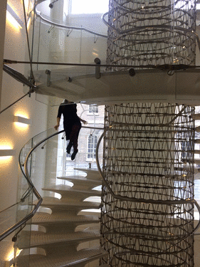
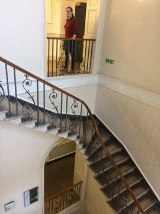

We like stairs..........
This is Abbey
This is Hilary
This is Laura


Our goal is to:
let you know about the wonderful stairs of Somerset House
show you ways in which you can climb them
be tour guides in the future
Stairs of Somerset House